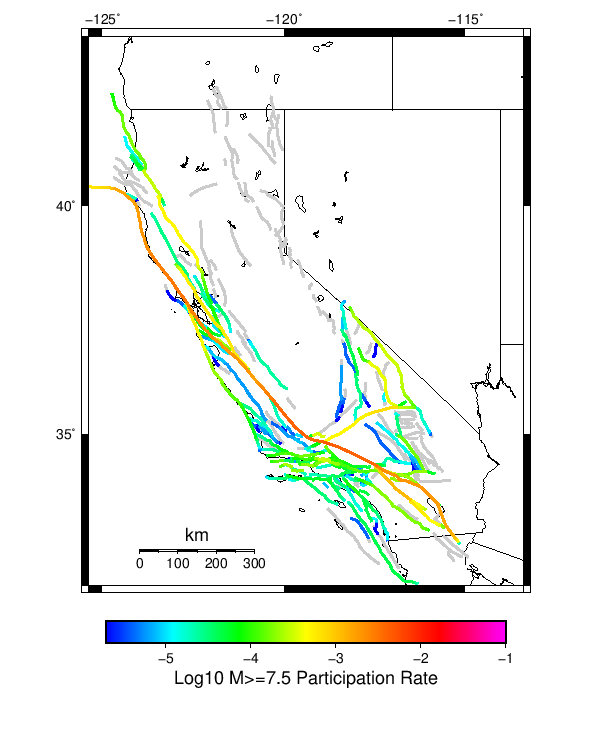

Start 2012, 500 yr, kCOV=1.16, Spontaneous, Historical Catalog Results
| Start 2012, 500 yr, kCOV=1.16, Spontaneous, Historical Catalog |
|---|
| Num Simulations | 15 (incomplete) |
| Start Time | 2012/01/01 00:00:00 UTC |
| Start Time Epoch Milliseconds | 1325376000000 |
| Duration | 500 Years |
| Includes Spontaneous? | true |
| Trigger Ruptures | (none) |
| Historical Ruptures | 60366 Trigger Ruptures |
| First: M7.3 at 1852/01/05 04:40:39 UTC |
| Last: M3.2 at 2011/12/31 19:14:44 UTC |
| Largest: M7.9 at 1857/01/09 16:25:39 UTC |
| Config Generated With | u3etas_config_builder.sh --start-year 2012 --num-simulations 1000 --duration-years 500 --include-spontaneous --historical-catalog --etas-k-cov 1.16 --hpc-site USC_HPC --nodes 36 --hours 24 --queue scec |
Table Of Contents
Magnitude Frequency Distribution
(top)
Legend
- Mean (thick black line): mean annual rate across all 15 catalogs
- 2.5%,97.5% (thin black lines): annual rate percentiles across all 15 catalogs
- Median (thin blue line): median annual rate across all 15 catalogs
- Mode (thin cyan line): modal annual rate across all 15 catalogs (scaled to annualized value)
- 500 yr Probability (thin red line): 500 year probability calculated as the fraction of catalogs with at least 1 occurrence
- 500 yr Supraseismogenic Probability (thin dashed red line): same as above, but only for supraseismogenic ruptures on explicitly modeled UCERF3 faults
- 95% Conf (light red shaded region): binomial 95% confidence bounds on probability

| Mag | Mean | 2.5 %ile | 97.5 %ile | Median | Mode | 500 yr Probability | 500 yr Supra-Seis Prob |
|---|
| M≥5 | 7.265 | 6.186 | 8.122 | 7.390 | 7.390 | 1.000 (100.00%) | 1.000 (100.00%) |
| M≥5.1 | 5.746 | 4.892 | 6.360 | 5.770 | 5.770 | 1.000 (100.00%) | 1.000 (100.00%) |
| M≥5.2 | 4.524 | 3.908 | 5.004 | 4.600 | 4.600 | 1.000 (100.00%) | 1.000 (100.00%) |
| M≥5.3 | 3.554 | 3.036 | 3.910 | 3.626 | 3.216 | 1.000 (100.00%) | 1.000 (100.00%) |
| M≥5.4 | 2.802 | 2.434 | 3.036 | 2.874 | 2.874 | 1.000 (100.00%) | 1.000 (100.00%) |
| M≥5.5 | 2.199 | 1.884 | 2.450 | 2.252 | 2.314 | 1.000 (100.00%) | 1.000 (100.00%) |
| M≥5.6 | 1.717 | 1.428 | 1.902 | 1.770 | 1.770 | 1.000 (100.00%) | 1.000 (100.00%) |
| M≥5.7 | 1.338 | 1.098 | 1.488 | 1.354 | 1.354 | 1.000 (100.00%) | 1.000 (100.00%) |
| M≥5.8 | 1.035 | 0.858 | 1.142 | 1.060 | 1.060 | 1.000 (100.00%) | 1.000 (100.00%) |
| M≥5.9 | 0.777 | 0.624 | 0.876 | 0.788 | 0.788 | 1.000 (100.00%) | 1.000 (100.00%) |
| M≥6 | 0.616 | 0.508 | 0.710 | 0.620 | 0.620 | 1.000 (100.00%) | 1.000 (100.00%) |
| M≥6.1 | 0.469 | 0.398 | 0.562 | 0.472 | 0.496 | 1.000 (100.00%) | 1.000 (100.00%) |
| M≥6.2 | 0.370 | 0.312 | 0.452 | 0.376 | 0.376 | 1.000 (100.00%) | 1.000 (100.00%) |
| M≥6.3 | 0.288 | 0.246 | 0.338 | 0.288 | 0.288 | 1.000 (100.00%) | 1.000 (100.00%) |
| M≥6.4 | 0.225 | 0.194 | 0.264 | 0.224 | 0.224 | 1.000 (100.00%) | 1.000 (100.00%) |
| M≥6.5 | 0.171 | 0.146 | 0.204 | 0.168 | 0.168 | 1.000 (100.00%) | 1.000 (100.00%) |
| M≥6.6 | 0.132 | 0.112 | 0.164 | 0.130 | 0.118 | 1.000 (100.00%) | 1.000 (100.00%) |
| M≥6.7 | 0.106 | 0.092 | 0.124 | 0.104 | 0.104 | 1.000 (100.00%) | 1.000 (100.00%) |
| M≥6.8 | 0.085 | 0.070 | 0.108 | 0.084 | 0.084 | 1.000 (100.00%) | 1.000 (100.00%) |
| M≥6.9 | 0.065 | 0.052 | 0.080 | 0.064 | 0.060 | 1.000 (100.00%) | 1.000 (100.00%) |
| M≥7 | 0.052 | 0.040 | 0.068 | 0.052 | 0.052 | 1.000 (100.00%) | 1.000 (100.00%) |
| M≥7.1 | 0.040 | 0.030 | 0.058 | 0.038 | 0.038 | 1.000 (100.00%) | 1.000 (100.00%) |
| M≥7.2 | 0.029 | 0.018 | 0.040 | 0.028 | 0.026 | 1.000 (100.00%) | 1.000 (100.00%) |
| M≥7.3 | 0.022 | 0.016 | 0.028 | 0.020 | 0.020 | 1.000 (100.00%) | 1.000 (100.00%) |
| M≥7.4 | 0.018 | 0.012 | 0.024 | 0.018 | 0.012 | 1.000 (100.00%) | 1.000 (100.00%) |
| M≥7.5 | 0.012 | 8.00E-3 | 0.018 | 0.010 | 0.010 | 1.000 (100.00%) | 1.000 (100.00%) |
| M≥7.6 | 9.87E-3 | 6.00E-3 | 0.014 | 0.010 | 0.010 | 1.000 (100.00%) | 1.000 (100.00%) |
| M≥7.7 | 7.73E-3 | 6.00E-3 | 0.012 | 6.00E-3 | 6.00E-3 | 1.000 (100.00%) | 1.000 (100.00%) |
| M≥7.8 | 6.00E-3 | 2.00E-3 | 0.010 | 6.00E-3 | 4.00E-3 | 1.000 (100.00%) | 1.000 (100.00%) |
| M≥7.9 | 3.60E-3 | 2.00E-3 | 8.00E-3 | 4.00E-3 | 4.00E-3 | 1.000 (100.00%) | 1.000 (100.00%) |
| M≥8 | 2.40E-3 | 0.000 | 4.00E-3 | 2.00E-3 | 2.00E-3 | 0.933 (93.33%) | 0.933 (93.33%) |
| M≥8.1 | 1.47E-3 | 0.000 | 4.00E-3 | 2.00E-3 | 2.00E-3 | 0.667 (66.67%) | 0.667 (66.67%) |
| M≥8.2 | 5.33E-4 | 0.000 | 2.00E-3 | 0.000 | 0.000 | 0.267 (26.67%) | 0.267 (26.67%) |
| M≥8.3 | 2.67E-4 | 0.000 | 2.00E-3 | 0.000 | 0.000 | 0.133 (13.33%) | 0.133 (13.33%) |
| M≥8.4 | 0.000 | 0.000 | 0.000 | 0.000 | 0.000 | 0.000 (0.00%) | 0.000 (0.00%) |
| M≥8.5 | 0.000 | 0.000 | 0.000 | 0.000 | 0.000 | 0.000 (0.00%) | 0.000 (0.00%) |
| M≥8.6 | 0.000 | 0.000 | 0.000 | 0.000 | 0.000 | 0.000 (0.00%) | 0.000 (0.00%) |
| M≥8.7 | 0.000 | 0.000 | 0.000 | 0.000 | 0.000 | 0.000 (0.00%) | 0.000 (0.00%) |
| M≥8.8 | 0.000 | 0.000 | 0.000 | 0.000 | 0.000 | 0.000 (0.00%) | 0.000 (0.00%) |
| M≥8.9 | 0.000 | 0.000 | 0.000 | 0.000 | 0.000 | 0.000 (0.00%) | 0.000 (0.00%) |
| M≥9 | 0.000 | 0.000 | 0.000 | 0.000 | 0.000 | 0.000 (0.00%) | 0.000 (0.00%) |
Long Term Rate Variability
(top)
162 Year Variability
(top)

Download CSV Here
| Magnitude | Mean | Median | Mode | Std. Dev. | 2.5 %-ile | 16 %-ile | 84 %-ile | 97.5 %-ile |
|---|
| 5.0 | 7.2681756 | 7.067901 | 7.067901 | 0.91662896 | 5.9259257 | 6.382716 | 8.246914 | 9.018518 |
| 5.1 | 5.7474623 | 5.5925927 | 5.5925927 | 0.726962 | 4.759259 | 5.037037 | 6.4753084 | 7.191358 |
| 5.2 | 4.5253773 | 4.351852 | 4.845679 | 0.5659234 | 3.7407408 | 4.0246916 | 5.0617285 | 5.740741 |
| 5.3 | 3.5518517 | 3.4444444 | 3.3765433 | 0.43434042 | 2.851852 | 3.148148 | 4.0308642 | 4.462963 |
| 5.4 | 2.8013718 | 2.7407408 | 2.6111112 | 0.33285832 | 2.2777777 | 2.5185184 | 3.1604939 | 3.4629629 |
| 5.5 | 2.1964335 | 2.1358025 | 1.9814814 | 0.273281 | 1.6975309 | 1.9814814 | 2.4814816 | 2.7592592 |
| 5.6 | 1.7137175 | 1.6790123 | 1.6790123 | 0.21683875 | 1.3703704 | 1.537037 | 1.9567901 | 2.1234567 |
| 5.7 | 1.3348422 | 1.3148148 | 1.2469136 | 0.16921994 | 0.99382716 | 1.1851852 | 1.5308642 | 1.654321 |
| 5.8 | 1.0316873 | 1.0185186 | 0.99382716 | 0.129647 | 0.75308645 | 0.9444444 | 1.1419753 | 1.2962962 |
| 5.9 | 0.7740741 | 0.7777778 | 0.80246913 | 0.10246136 | 0.5617284 | 0.67901236 | 0.8518519 | 0.99382716 |
| 6.0 | 0.611797 | 0.60493827 | 0.5740741 | 0.08340316 | 0.44444445 | 0.5493827 | 0.6851852 | 0.80246913 |
| 6.1 | 0.46611798 | 0.46296296 | 0.43209878 | 0.064508416 | 0.33950618 | 0.41358024 | 0.5308642 | 0.60493827 |
| 6.2 | 0.36707819 | 0.3580247 | 0.35185185 | 0.052750614 | 0.2777778 | 0.3148148 | 0.41358024 | 0.4814815 |
| 6.3 | 0.28600824 | 0.2777778 | 0.2654321 | 0.04213428 | 0.22222222 | 0.24691358 | 0.32098764 | 0.37654322 |
| 6.4 | 0.22414266 | 0.22839506 | 0.22839506 | 0.034815088 | 0.16049382 | 0.19135803 | 0.25308642 | 0.2962963 |
| 6.5 | 0.17064472 | 0.16666667 | 0.14814815 | 0.028077185 | 0.11728395 | 0.14814815 | 0.19753087 | 0.22222222 |
| 6.6 | 0.13237311 | 0.12962963 | 0.16049382 | 0.023154901 | 0.09259259 | 0.11111111 | 0.16049382 | 0.16666667 |
| 6.7 | 0.106035665 | 0.10493827 | 0.09876543 | 0.020945065 | 0.06790123 | 0.086419754 | 0.12962963 | 0.14814815 |
| 6.8 | 0.08545953 | 0.086419754 | 0.074074075 | 0.019913575 | 0.049382716 | 0.06790123 | 0.10493827 | 0.12345679 |
| 6.9 | 0.065020576 | 0.061728396 | 0.06790123 | 0.019324044 | 0.037037037 | 0.043209877 | 0.086419754 | 0.10493827 |
| 7.0 | 0.05185185 | 0.049382716 | 0.037037037 | 0.016925495 | 0.030864198 | 0.037037037 | 0.074074075 | 0.08024691 |
| 7.1 | 0.03978052 | 0.037037037 | 0.030864198 | 0.015152092 | 0.018518519 | 0.024691358 | 0.055555556 | 0.06790123 |
| 7.2 | 0.029080933 | 0.024691358 | 0.024691358 | 0.010661028 | 0.012345679 | 0.018518519 | 0.037037037 | 0.049382716 |
| 7.3 | 0.022222223 | 0.018518519 | 0.018518519 | 0.008669988 | 0.012345679 | 0.012345679 | 0.030864198 | 0.043209877 |
| 7.4 | 0.017832648 | 0.018518519 | 0.012345679 | 0.008551537 | 0.0061728396 | 0.012345679 | 0.030864198 | 0.030864198 |
| 7.5 | 0.0119341565 | 0.012345679 | 0.0061728396 | 0.00725622 | 0.0 | 0.0061728396 | 0.018518519 | 0.024691358 |
| 7.6 | 0.009876544 | 0.012345679 | 0.012345679 | 0.006366219 | 0.0 | 0.0061728396 | 0.018518519 | 0.018518519 |
| 7.7 | 0.00781893 | 0.0061728396 | 0.0061728396 | 0.004994073 | 0.0 | 0.0 | 0.012345679 | 0.018518519 |
| 7.8 | 0.0061728396 | 0.0061728396 | 0.0061728396 | 0.0043648565 | 0.0 | 0.0 | 0.012345679 | 0.012345679 |
| 7.9 | 0.0037037036 | 0.0061728396 | 0.0061728396 | 0.0035800533 | 0.0 | 0.0 | 0.0061728396 | 0.012345679 |
| 8.0 | 0.002469136 | 0.0 | 0.0 | 0.003329382 | 0.0 | 0.0 | 0.0061728396 | 0.0061728396 |
| 8.1 | 0.0015089164 | 0.0 | 0.0 | 0.0026827992 | 0.0 | 0.0 | 0.0061728396 | 0.0061728396 |
| 8.2 | 5.4869684E-4 | 0.0 | 0.0 | 0.0017765373 | 0.0 | 0.0 | 0.0 | 0.0061728396 |
| 8.3 | 2.7434842E-4 | 0.0 | 0.0 | 0.0012864758 | 0.0 | 0.0 | 0.0 | 0.0061728396 |
| 8.4 | 0.0 | 0.0 | 0.0 | 0.0 | 0.0 | 0.0 | 0.0 | 0.0 |
| 8.5 | 0.0 | 0.0 | 0.0 | 0.0 | 0.0 | 0.0 | 0.0 | 0.0 |
| 8.6 | 0.0 | 0.0 | 0.0 | 0.0 | 0.0 | 0.0 | 0.0 | 0.0 |
| 8.7 | 0.0 | 0.0 | 0.0 | 0.0 | 0.0 | 0.0 | 0.0 | 0.0 |
| 8.8 | 0.0 | 0.0 | 0.0 | 0.0 | 0.0 | 0.0 | 0.0 | 0.0 |
| 8.9 | 0.0 | 0.0 | 0.0 | 0.0 | 0.0 | 0.0 | 0.0 | 0.0 |
| 9.0 | 0.0 | 0.0 | 0.0 | 0.0 | 0.0 | 0.0 | 0.0 | 0.0 |
80 Year Variability
(top)
Download CSV Here
| Magnitude | Mean | Median | Mode | Std. Dev. | 2.5 %-ile | 16 %-ile | 84 %-ile | 97.5 %-ile |
|---|
| 5.0 | 7.238333 | 6.975 | 6.6 | 1.3477768 | 5.4375 | 6.025 | 8.3625 | 10.8 |
| 5.1 | 5.7266665 | 5.5625 | 4.8375 | 1.0847661 | 4.2625 | 4.7875 | 6.7 | 8.5 |
| 5.2 | 4.507361 | 4.3875 | 4.3875 | 0.85414535 | 3.3 | 3.7625 | 5.325 | 6.75 |
| 5.3 | 3.5391667 | 3.425 | 3.3125 | 0.65820557 | 2.7 | 2.9125 | 4.1375 | 5.3625 |
| 5.4 | 2.7919445 | 2.7125 | 2.6 | 0.5226516 | 2.0 | 2.3125 | 3.2375 | 4.1875 |
| 5.5 | 2.1880555 | 2.1625 | 2.1125 | 0.41442102 | 1.5625 | 1.8125 | 2.55 | 3.2875 |
| 5.6 | 1.7069445 | 1.65 | 1.7375 | 0.32367986 | 1.2625 | 1.425 | 2.075 | 2.45 |
| 5.7 | 1.3297222 | 1.3 | 1.3375 | 0.25432757 | 0.9375 | 1.0875 | 1.6 | 1.9875 |
| 5.8 | 1.0295833 | 0.9875 | 0.9875 | 0.19581695 | 0.725 | 0.85 | 1.2125 | 1.4125 |
| 5.9 | 0.7729167 | 0.75 | 0.7125 | 0.14948706 | 0.5625 | 0.6375 | 0.9 | 1.075 |
| 6.0 | 0.61180556 | 0.6125 | 0.625 | 0.12499103 | 0.425 | 0.5 | 0.7125 | 0.8875 |
| 6.1 | 0.46555555 | 0.4625 | 0.475 | 0.09672138 | 0.3125 | 0.3625 | 0.5375 | 0.675 |
| 6.2 | 0.36722222 | 0.3625 | 0.35 | 0.08538943 | 0.2125 | 0.2875 | 0.4375 | 0.5375 |
| 6.3 | 0.28611112 | 0.275 | 0.275 | 0.06623514 | 0.175 | 0.225 | 0.35 | 0.425 |
| 6.4 | 0.22444445 | 0.225 | 0.2125 | 0.054660313 | 0.125 | 0.175 | 0.275 | 0.3375 |
| 6.5 | 0.17041667 | 0.1625 | 0.15 | 0.0462593 | 0.1 | 0.125 | 0.2125 | 0.275 |
| 6.6 | 0.13180555 | 0.125 | 0.15 | 0.039178766 | 0.0625 | 0.0875 | 0.175 | 0.2 |
| 6.7 | 0.10541666 | 0.1125 | 0.125 | 0.03325981 | 0.05 | 0.0625 | 0.1375 | 0.175 |
| 6.8 | 0.084861115 | 0.0875 | 0.0875 | 0.030474618 | 0.0375 | 0.05 | 0.1125 | 0.15 |
| 6.9 | 0.064444445 | 0.0625 | 0.0625 | 0.026757803 | 0.0125 | 0.0375 | 0.0875 | 0.125 |
| 7.0 | 0.05125 | 0.05 | 0.0375 | 0.023407869 | 0.0 | 0.025 | 0.075 | 0.1 |
| 7.1 | 0.039305557 | 0.0375 | 0.0375 | 0.020317106 | 0.0 | 0.025 | 0.0625 | 0.0875 |
| 7.2 | 0.02875 | 0.025 | 0.025 | 0.016059274 | 0.0 | 0.0125 | 0.05 | 0.0625 |
| 7.3 | 0.021944445 | 0.025 | 0.025 | 0.012888773 | 0.0 | 0.0125 | 0.0375 | 0.05 |
| 7.4 | 0.0175 | 0.0125 | 0.0125 | 0.013090008 | 0.0 | 0.0 | 0.025 | 0.05 |
| 7.5 | 0.011666667 | 0.0125 | 0.0125 | 0.010731661 | 0.0 | 0.0 | 0.025 | 0.0375 |
| 7.6 | 0.0095833335 | 0.0125 | 0.0125 | 0.009189408 | 0.0 | 0.0 | 0.0125 | 0.025 |
| 7.7 | 0.007638889 | 0.0125 | 0.0125 | 0.007656248 | 0.0 | 0.0 | 0.0125 | 0.025 |
| 7.8 | 0.0059722224 | 0.0 | 0.0 | 0.0070680324 | 0.0 | 0.0 | 0.0125 | 0.025 |
| 7.9 | 0.00375 | 0.0 | 0.0 | 0.0057603107 | 0.0 | 0.0 | 0.0125 | 0.0125 |
| 8.0 | 0.0025 | 0.0 | 0.0 | 0.0050280113 | 0.0 | 0.0 | 0.0125 | 0.0125 |
| 8.1 | 0.0015277778 | 0.0 | 0.0 | 0.004117216 | 0.0 | 0.0 | 0.0 | 0.0125 |
| 8.2 | 5.5555557E-4 | 0.0 | 0.0 | 0.0025904367 | 0.0 | 0.0 | 0.0 | 0.0125 |
| 8.3 | 2.7777778E-4 | 0.0 | 0.0 | 0.0018528919 | 0.0 | 0.0 | 0.0 | 0.0 |
| 8.4 | 0.0 | 0.0 | 0.0 | 0.0 | 0.0 | 0.0 | 0.0 | 0.0 |
| 8.5 | 0.0 | 0.0 | 0.0 | 0.0 | 0.0 | 0.0 | 0.0 | 0.0 |
| 8.6 | 0.0 | 0.0 | 0.0 | 0.0 | 0.0 | 0.0 | 0.0 | 0.0 |
| 8.7 | 0.0 | 0.0 | 0.0 | 0.0 | 0.0 | 0.0 | 0.0 | 0.0 |
| 8.8 | 0.0 | 0.0 | 0.0 | 0.0 | 0.0 | 0.0 | 0.0 | 0.0 |
| 8.9 | 0.0 | 0.0 | 0.0 | 0.0 | 0.0 | 0.0 | 0.0 | 0.0 |
| 9.0 | 0.0 | 0.0 | 0.0 | 0.0 | 0.0 | 0.0 | 0.0 | 0.0 |
28 Year Variability
(top)

Download CSV Here
| Magnitude | Mean | Median | Mode | Std. Dev. | 2.5 %-ile | 16 %-ile | 84 %-ile | 97.5 %-ile |
|---|
| 5.0 | 7.24986 | 6.75 | 6.107143 | 2.516556 | 4.571429 | 5.5 | 8.571428 | 15.035714 |
| 5.1 | 5.737815 | 5.392857 | 5.107143 | 2.0326078 | 3.607143 | 4.25 | 6.785714 | 11.964286 |
| 5.2 | 4.5155463 | 4.214286 | 4.392857 | 1.6022339 | 2.7857144 | 3.2857144 | 5.392857 | 9.0 |
| 5.3 | 3.545238 | 3.357143 | 3.392857 | 1.2600031 | 2.2142856 | 2.607143 | 4.178571 | 6.928571 |
| 5.4 | 2.7963586 | 2.642857 | 2.4642856 | 0.9836854 | 1.5714285 | 2.0 | 3.3214285 | 5.571429 |
| 5.5 | 2.1931372 | 2.0714285 | 2.0357144 | 0.763621 | 1.2142857 | 1.6071428 | 2.642857 | 4.321429 |
| 5.6 | 1.7098039 | 1.6071428 | 1.6428572 | 0.5844962 | 0.96428573 | 1.25 | 2.0714285 | 3.357143 |
| 5.7 | 1.3316526 | 1.25 | 1.1785715 | 0.45924026 | 0.71428573 | 0.9285714 | 1.6428572 | 2.392857 |
| 5.8 | 1.0313725 | 1.0 | 1.0714285 | 0.3606634 | 0.5 | 0.71428573 | 1.2857143 | 1.8214285 |
| 5.9 | 0.77464986 | 0.75 | 0.64285713 | 0.28143346 | 0.39285713 | 0.53571427 | 1.0 | 1.3928572 |
| 6.0 | 0.61246496 | 0.5714286 | 0.5714286 | 0.22754198 | 0.2857143 | 0.39285713 | 0.78571427 | 1.0714285 |
| 6.1 | 0.46596637 | 0.42857143 | 0.42857143 | 0.17319573 | 0.17857143 | 0.2857143 | 0.60714287 | 0.85714287 |
| 6.2 | 0.367507 | 0.35714287 | 0.35714287 | 0.14838377 | 0.14285715 | 0.21428572 | 0.5 | 0.71428573 |
| 6.3 | 0.28627452 | 0.2857143 | 0.25 | 0.11921023 | 0.10714286 | 0.17857143 | 0.39285713 | 0.5714286 |
| 6.4 | 0.22464986 | 0.21428572 | 0.21428572 | 0.10372611 | 0.071428575 | 0.14285715 | 0.32142857 | 0.42857143 |
| 6.5 | 0.17044818 | 0.17857143 | 0.17857143 | 0.088418394 | 0.035714287 | 0.071428575 | 0.25 | 0.35714287 |
| 6.6 | 0.13207284 | 0.14285715 | 0.14285715 | 0.07545423 | 0.0 | 0.071428575 | 0.21428572 | 0.2857143 |
| 6.7 | 0.105882354 | 0.10714286 | 0.071428575 | 0.06474194 | 0.0 | 0.035714287 | 0.17857143 | 0.25 |
| 6.8 | 0.085154064 | 0.071428575 | 0.071428575 | 0.056528673 | 0.0 | 0.035714287 | 0.14285715 | 0.21428572 |
| 6.9 | 0.06456583 | 0.071428575 | 0.071428575 | 0.046876587 | 0.0 | 0.035714287 | 0.10714286 | 0.17857143 |
| 7.0 | 0.05140056 | 0.035714287 | 0.035714287 | 0.041125976 | 0.0 | 0.0 | 0.071428575 | 0.14285715 |
| 7.1 | 0.039355744 | 0.035714287 | 0.035714287 | 0.035527423 | 0.0 | 0.0 | 0.071428575 | 0.10714286 |
| 7.2 | 0.028711485 | 0.035714287 | 0.0 | 0.030081382 | 0.0 | 0.0 | 0.071428575 | 0.10714286 |
| 7.3 | 0.02184874 | 0.0 | 0.0 | 0.02580115 | 0.0 | 0.0 | 0.035714287 | 0.071428575 |
| 7.4 | 0.017366948 | 0.0 | 0.0 | 0.024104353 | 0.0 | 0.0 | 0.035714287 | 0.071428575 |
| 7.5 | 0.01162465 | 0.0 | 0.0 | 0.020779483 | 0.0 | 0.0 | 0.035714287 | 0.071428575 |
| 7.6 | 0.00952381 | 0.0 | 0.0 | 0.01818687 | 0.0 | 0.0 | 0.035714287 | 0.071428575 |
| 7.7 | 0.007563025 | 0.0 | 0.0 | 0.015934883 | 0.0 | 0.0 | 0.035714287 | 0.035714287 |
| 7.8 | 0.006022409 | 0.0 | 0.0 | 0.014128248 | 0.0 | 0.0 | 0.035714287 | 0.035714287 |
| 7.9 | 0.0037815126 | 0.0 | 0.0 | 0.011010431 | 0.0 | 0.0 | 0.0 | 0.035714287 |
| 8.0 | 0.0025210085 | 0.0 | 0.0 | 0.009165696 | 0.0 | 0.0 | 0.0 | 0.035714287 |
| 8.1 | 0.0015406163 | 0.0 | 0.0 | 0.007270199 | 0.0 | 0.0 | 0.0 | 0.035714287 |
| 8.2 | 5.602241E-4 | 0.0 | 0.0 | 0.004446537 | 0.0 | 0.0 | 0.0 | 0.0 |
| 8.3 | 2.8011206E-4 | 0.0 | 0.0 | 0.003156678 | 0.0 | 0.0 | 0.0 | 0.0 |
| 8.4 | 0.0 | 0.0 | 0.0 | 0.0 | 0.0 | 0.0 | 0.0 | 0.0 |
| 8.5 | 0.0 | 0.0 | 0.0 | 0.0 | 0.0 | 0.0 | 0.0 | 0.0 |
| 8.6 | 0.0 | 0.0 | 0.0 | 0.0 | 0.0 | 0.0 | 0.0 | 0.0 |
| 8.7 | 0.0 | 0.0 | 0.0 | 0.0 | 0.0 | 0.0 | 0.0 | 0.0 |
| 8.8 | 0.0 | 0.0 | 0.0 | 0.0 | 0.0 | 0.0 | 0.0 | 0.0 |
| 8.9 | 0.0 | 0.0 | 0.0 | 0.0 | 0.0 | 0.0 | 0.0 | 0.0 |
| 9.0 | 0.0 | 0.0 | 0.0 | 0.0 | 0.0 | 0.0 | 0.0 | 0.0 |
Variability Duration Dependence
(top)

Download CSV Here
| Duration (years) | Mean | Median | Mode | Std. Dev. | 2.5 %-ile | 16 %-ile | 84 %-ile | 97.5 %-ile |
|---|
| 1.0 | 7.2654667 | 6.0 | 4.0 | 9.315902 | 1.0 | 3.0 | 10.0 | 23.0 |
| 4.0 | 7.2654667 | 6.25 | 6.25 | 5.35056 | 3.0 | 4.25 | 9.25 | 18.5 |
| 8.0 | 7.269086 | 6.25 | 6.25 | 4.0783257 | 3.625 | 4.75 | 9.25 | 18.625 |
| 12.0 | 7.272358 | 6.3333335 | 5.0833335 | 3.4963605 | 4.0 | 5.0 | 9.166667 | 15.166667 |
| 16.0 | 7.269086 | 6.5 | 5.4375 | 3.141241 | 4.25 | 5.1875 | 8.875 | 16.8125 |
| 20.0 | 7.2654667 | 6.6 | 6.15 | 2.8278837 | 4.45 | 5.25 | 8.75 | 15.25 |
| 24.0 | 7.238333 | 6.6666665 | 5.9583335 | 2.5291162 | 4.625 | 5.375 | 8.541667 | 14.333333 |
| 28.0 | 7.24986 | 6.75 | 6.107143 | 2.516556 | 4.571429 | 5.5 | 8.571428 | 15.035714 |
| 32.0 | 7.238333 | 6.625 | 6.59375 | 2.3234656 | 4.75 | 5.5 | 8.5625 | 14.75 |
| 36.0 | 7.241453 | 6.8055553 | 6.388889 | 2.0779135 | 4.8333335 | 5.6666665 | 8.361111 | 14.361111 |
| 40.0 | 7.238333 | 6.75 | 6.5 | 1.9930718 | 5.075 | 5.625 | 8.6 | 13.075 |
| 44.0 | 7.263361 | 6.7272725 | 7.1363635 | 2.0776718 | 5.1136365 | 5.7954545 | 8.386364 | 12.909091 |
| 48.0 | 7.238333 | 6.7916665 | 5.8333335 | 1.9334078 | 5.2083335 | 5.8125 | 8.5 | 13.3125 |
| 52.0 | 7.241453 | 7.0576925 | 6.6923075 | 1.6802335 | 5.1153846 | 5.923077 | 8.326923 | 12.115385 |
| 56.0 | 7.251488 | 6.946429 | 7.267857 | 1.6976303 | 5.125 | 5.964286 | 8.089286 | 12.267858 |
| 60.0 | 7.238333 | 6.85 | 7.35 | 1.765655 | 5.0333333 | 5.8333335 | 8.383333 | 11.9 |
| 64.0 | 7.251488 | 6.828125 | 6.484375 | 1.4946672 | 5.1875 | 5.96875 | 8.609375 | 11.203125 |
| 68.0 | 7.24986 | 6.9852943 | 6.617647 | 1.5659394 | 5.132353 | 5.970588 | 8.264706 | 11.75 |
| 72.0 | 7.25108 | 6.8472223 | 7.0555553 | 1.5783526 | 5.4583335 | 5.888889 | 8.111111 | 11.375 |
| 76.0 | 7.2444444 | 6.9210525 | 5.9736843 | 1.5156761 | 5.368421 | 6.0263157 | 7.8157897 | 11.026316 |
| 80.0 | 7.238333 | 6.975 | 6.6 | 1.3477768 | 5.4375 | 6.025 | 8.3625 | 10.8 |
| 84.0 | 7.270159 | 6.964286 | 6.75 | 1.3221704 | 5.5833335 | 6.25 | 8.369047 | 11.238095 |
| 88.0 | 7.246212 | 7.0 | 6.8522725 | 1.3403759 | 5.5227275 | 6.068182 | 8.477273 | 11.590909 |
| 92.0 | 7.2430434 | 7.0108695 | 6.445652 | 1.3409281 | 5.478261 | 6.1413045 | 8.423913 | 11.706522 |
| 96.0 | 7.238333 | 6.9583335 | 7.1458335 | 1.4087242 | 5.5833335 | 6.1041665 | 8.208333 | 11.697917 |
| 100.0 | 7.2654667 | 7.12 | 6.01 | 1.2563087 | 5.38 | 6.02 | 8.51 | 10.99 |
| 200.0 | 7.2908335 | 7.22 | 7.265 | 0.8923778 | 5.555 | 6.33 | 8.31 | 8.84 |
| 300.0 | 7.232 | 7.47 | 6.56 | 0.6159736 | 6.0133333 | 6.56 | 7.65 | 8.096666 |
| 400.0 | 7.2908335 | 7.535 | 7.535 | 0.6598029 | 5.9425 | 6.5325 | 7.88 | 8.35 |
| 500.0 | 7.2654667 | 7.39 | 7.39 | 0.6218275 | 6.186 | 6.514 | 7.9 | 8.122 |
Simulation Stationarity
(top)

Section Participation
(top)
Section Participation Plots
(top)
| Min Mag | Complete Catalog (including spontaneous) |
|---|
| All Supra. Seis. |  |
| M≥6.5 | |
| M≥7 |  |
| M≥7.5 |  |
| M≥8 |  |
Supra-Seismogenic Parent Sections Table
(top)
First 10 of 258 with matching ruptures shown
| Parent Name | Total Mean Annual Rate | Total 500 Year Prob |
|---|
| San Andreas (Parkfield) | 0.0388 | 1.0 |
| San Andreas (Creeping Section) 2011 CFM | 0.024933333 | 1.0 |
| San Andreas (Mojave S) | 0.017733334 | 1.0 |
| Mendocino | 0.0164 | 1.0 |
| Cerro Prieto | 0.012266667 | 1.0 |
| Imperial | 0.011333333 | 1.0 |
| Brawley (Seismic Zone) alt 1 | 0.009466667 | 1.0 |
| Hayward (So) 2011 CFM | 0.008666666 | 1.0 |
| Elsinore (Glen Ivy) rev | 0.0077333334 | 1.0 |
| San Andreas (Santa Cruz Mts) 2011 CFM | 0.007333333 | 1.0 |
M≥6.5 Parent Sections Table
(top)
First 10 of 226 with matching ruptures shown
| Parent Name | Total Mean Annual Rate | Total 500 Year Prob |
|---|
| San Andreas (Creeping Section) 2011 CFM | 0.011333333 | 1.0 |
| Cerro Prieto | 0.0112 | 1.0 |
| Imperial | 0.007866667 | 1.0 |
| Mendocino | 0.0077333334 | 1.0 |
| Brawley (Seismic Zone) alt 1 | 0.007333333 | 1.0 |
| Hayward (So) 2011 CFM | 0.007333333 | 1.0 |
| San Andreas (Cholame) rev | 0.0070666666 | 1.0 |
| San Andreas (Mojave S) | 0.0069333334 | 1.0 |
| San Andreas (Santa Cruz Mts) 2011 CFM | 0.0068 | 1.0 |
| San Andreas (Carrizo) rev | 0.006666667 | 1.0 |
M≥7 Parent Sections Table
(top)
First 10 of 158 with matching ruptures shown
| Parent Name | Total Mean Annual Rate | Total 500 Year Prob |
|---|
| San Andreas (Creeping Section) 2011 CFM | 0.007333333 | 1.0 |
| San Andreas (Carrizo) rev | 0.0062666666 | 1.0 |
| San Andreas (Cholame) rev | 0.0061333333 | 1.0 |
| San Andreas (Santa Cruz Mts) 2011 CFM | 0.0057333335 | 1.0 |
| San Andreas (Mojave S) | 0.0053333333 | 1.0 |
| San Andreas (Parkfield) | 0.0049333335 | 1.0 |
| San Andreas (Mojave N) | 0.0048 | 1.0 |
| San Andreas (North Coast) 2011 CFM | 0.0048 | 1.0 |
| San Andreas (San Bernardino N) | 0.0048 | 1.0 |
| San Andreas (Coachella) rev | 0.0046666665 | 1.0 |
M≥7.5 Parent Sections Table
(top)
First 10 of 87 with matching ruptures shown
| Parent Name | Total Mean Annual Rate | Total 500 Year Prob |
|---|
| San Andreas (Mojave N) | 0.0046666665 | 1.0 |
| San Andreas (Mojave S) | 0.0045333332 | 1.0 |
| San Andreas (Big Bend) | 0.0042666667 | 1.0 |
| San Andreas (Carrizo) rev | 0.0042666667 | 1.0 |
| San Andreas (Cholame) rev | 0.0041333335 | 1.0 |
| San Andreas (Creeping Section) 2011 CFM | 0.004 | 1.0 |
| San Andreas (San Bernardino N) | 0.004 | 1.0 |
| San Andreas (North Coast) 2011 CFM | 0.0037333334 | 1.0 |
| San Andreas (Parkfield) | 0.0036 | 1.0 |
| San Andreas (Peninsula) 2011 CFM | 0.0030666667 | 1.0 |
M≥8 Parent Sections Table
(top)
First 10 of 36 with matching ruptures shown
| Parent Name | Total Mean Annual Rate | Total 500 Year Prob |
|---|
| San Andreas (Big Bend) | 0.0021333334 | 0.93333334 |
| San Andreas (Carrizo) rev | 0.0021333334 | 0.93333334 |
| San Andreas (Cholame) rev | 0.0021333334 | 0.93333334 |
| San Andreas (Mojave N) | 0.0021333334 | 0.93333334 |
| San Andreas (Mojave S) | 0.0021333334 | 0.93333334 |
| San Andreas (San Bernardino N) | 0.0021333334 | 0.93333334 |
| San Andreas (Parkfield) | 0.002 | 0.8666667 |
| San Andreas (Creeping Section) 2011 CFM | 0.0017333333 | 0.8 |
| San Andreas (Santa Cruz Mts) 2011 CFM | 0.0012 | 0.53333336 |
| San Andreas (Coachella) rev | 0.0010666667 | 0.53333336 |
Gridded Nucleation
(top)
| Min Mag | Complete Catalog (including spontaneous) |
|---|
| M≥5 |  |
| M≥6 |  |
| M≥7 |  |
(top)
{
"numSimulations": 1000,
"duration": 500.0,
"startYear": 2012,
"includeSpontaneous": true,
"randomSeed": 1571166429978,
"binaryOutput": true,
"binaryOutputFilters": [
{
"prefix": "results_complete",
"descendantsOnly": false
},
{
"prefix": "results_m5_preserve_chain",
"minMag": 5.0,
"preserveChainBelowMag": true,
"descendantsOnly": false
}
],
"forceRecalc": false,
"simulationName": "Start 2012, 500 yr, kCOV\u003d1.16, Spontaneous, Historical Catalog",
"numRetries": 3,
"outputDir": "${ETAS_SIM_DIR}/2019_10_15-Start2012_500yr_kCOV1p16_Spontaneous_HistoricalCatalog",
"triggerCatalog": "${ETAS_LAUNCHER}/inputs/u3_historical_catalog.txt",
"triggerCatalogSurfaceMappings": "${ETAS_LAUNCHER}/inputs/u3_historical_catalog_finite_fault_mappings.xml",
"treatTriggerCatalogAsSpontaneous": true,
"cacheDir": "${ETAS_LAUNCHER}/inputs/cache_fm3p1_ba",
"fssFile": "${ETAS_LAUNCHER}/inputs/2013_05_10-ucerf3p3-production-10runs_COMPOUND_SOL_FM3_1_SpatSeisU3_MEAN_BRANCH_AVG_SOL.zip",
"probModel": "FULL_TD",
"applySubSeisForSupraNucl": true,
"totRateScaleFactor": 1.14,
"gridSeisCorr": true,
"timeIndependentERF": false,
"griddedOnly": false,
"imposeGR": false,
"includeIndirectTriggering": true,
"gridSeisDiscr": 0.1,
"catalogCompletenessModel": "RELAXED",
"etas_k_cov": 1.16,
"configCommand": "u3etas_config_builder.sh --start-year 2012 --num-simulations 1000 --duration-years 500 --include-spontaneous --historical-catalog --etas-k-cov 1.16 --hpc-site USC_HPC --nodes 36 --hours 24 --queue scec",
"configTime": 1571166429978
}